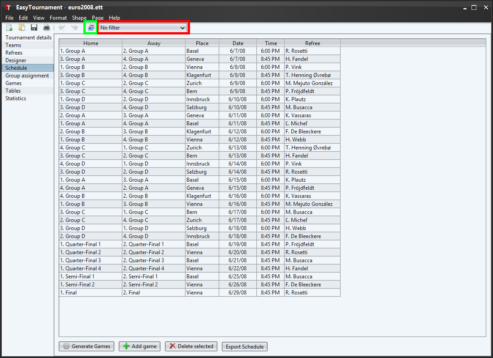
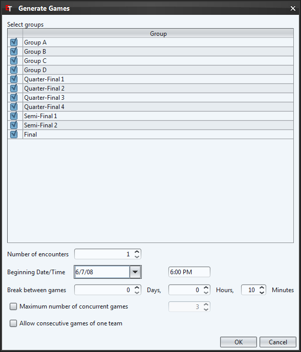

With the button "Add game" or the context menu (right mouse button) a single new game will be added to the schedule.
Now you can select the home position on the first column and afterwards the away position in the second column. Optionally you can edit the other cells.
The table will be sorted by date and time.
Referees are only selectable if they are added on the referee screen. If you don't plan to add any referees you can hide the referee column by deselecting the corresponding checkbox in the settings.

With the button "Generate games" you can open a dialog to create games for entire groups at once.
First you can select the groups for which you would like to create games. "Number of encounters" specifies how many games a team should have against every other team in the group. (Home and away games will be created equally if possible).
By "Break between games" the games are generated under the assumption that there is no overtime. In the above example the second game begins at 19:40 (18:00 + 90 minutes regular game time + 10 minutes break).
If you select "Maximum number of concurrent games" you are able to set the number of available sports fields in this tournament.
By default there will be no team that has two consecutive games (There will be at least a break of one game). If you like to allow consecutive games, you can select "Allow consecutive games of one team".
The green marked button in the top most image allows to show the team names instead of the position. This of course only works if the teams are assigned to a group (see Group assignment).
It is possible to filter the schedule entries (by Group, Team or Referee) with the red marked drop down list in the top most image.
The schedule can be saved as CSV (e.g. for spreadsheet applications as MS Excel) or as HTML file by selecting the menu "File"->"Export...". In the opening dialog you need to choose "Schedule".
In the saving dialog (see next image) you can choose the desired filetype.